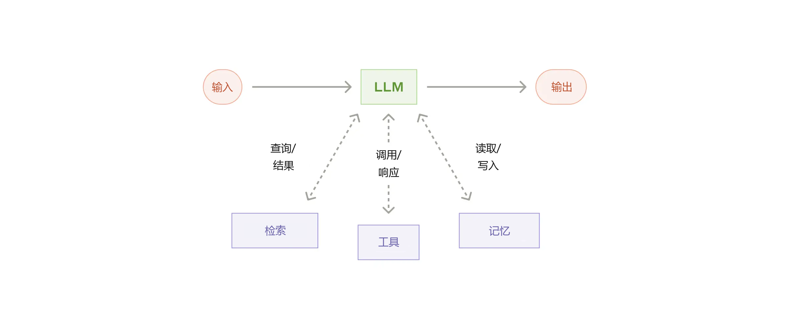
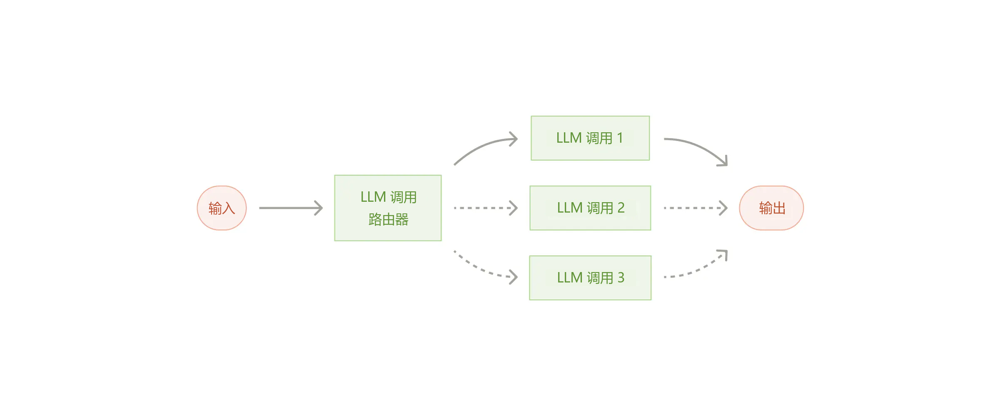
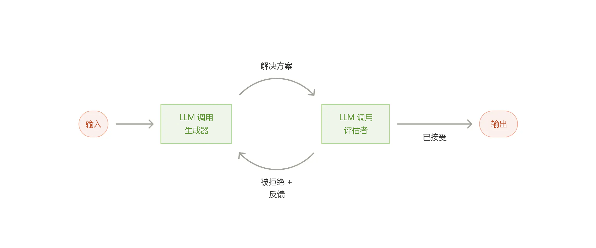
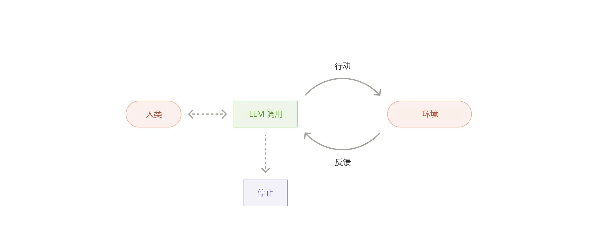
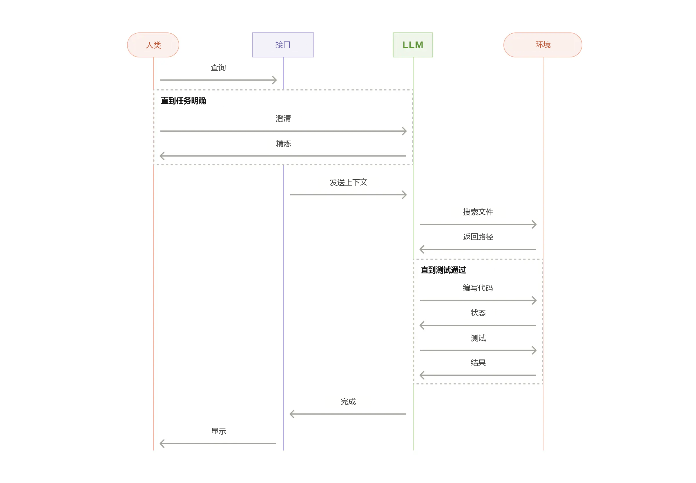

构建有效的 AI 智能体
📖 中文摘要
专业术语注解
智能体（agent）：由 LLM 动态决定自身行动与工具使用的自主系统工作流（workflow）：通过预定义代码路径编排 LLM 与工具的固定流程提示链（prompt chaining）：把一个任务拆成多个依次处理的步骤路由（routing）：对输入分类并导向专门化处理流程的模式检索（retrieval）：从外部知识库获取相关上下文供模型使用的技术工具调用（tool use）：让 LLM 调用函数、API 等外部能力执行动作📄 中文全文
- 来源： https://www.anthropic.com/research/building-effective-agents
注意：本文中描述的许多工具生态自 2024 年 12 月以来已经发生变化。关于我们当前的方法，请参阅我们如何构建 Claude Managed Agents 和Managed Agents 文档。
在过去一年里，我们与数十个跨行业的团队合作，构建大型语言模型（LLM）智能体。始终如一的是，最成功的实现并没有使用复杂的框架或专门的库。相反，它们是用简单、可组合的模式构建的。 在这篇文章中，我们分享从与客户合作以及自己构建智能体中得到的经验，并为开发者提供关于构建高效智能体的实用建议。
什么是智能体？
“智能体”（agent）可以有多种定义方式。一些客户将智能体定义为完全自主的系统，能在较长时间内独立运行，使用各种工具完成复杂任务。另一些客户则用这个词来描述更规定性的实现，即遵循预定义的工作流程。在 Anthropic，我们将所有这些变体归类为智能体系统（agentic systems），但在工作流（workflows）和智能体（agents）之间划出了一个重要的架构区别： * 工作流是通过预定义的代码路径编排 LLM 和工具的系统。 * 智能体则是由 LLM 动态指导自身流程和工具使用的系统，对如何完成任务保持控制。
下面，我们将详细探讨这两种智能体系统。在附录 1（“实践中的智能体”）中，我们描述了两个客户发现使用这类系统特别有价值的领域。
何时（以及何时不）使用智能体
在使用 LLM 构建应用程序时，我们建议找到尽可能最简单的解决方案，只在需要时增加复杂性。这可能意味着根本不构建智能体系统。智能体系统常常以延迟和成本换取更好的任务性能，你应该考虑这种权衡何时有意义。 当需要更多复杂性时，工作流为定义明确的任务提供了可预测性和一致性，而智能体则是在需要大规模灵活性和模型驱动的决策时的更好选择。然而，对于许多应用来说，用检索和上下文示例优化单个 LLM 调用通常就足够了。
何时以及如何使用框架
有许多框架使智能体系统更容易实现，包括： * Claude Agent SDK； * AWS 的 Strands Agents SDK； * Rivet，一个拖放式 GUI LLM 工作流构建器；以及 * Vellum，另一个用于构建和测试复杂工作流的 GUI 工具。
这些框架通过简化调用 LLM、定义和解析工具、将调用链接在一起等标准底层任务，使入门变得容易。然而，它们常常会引入额外的抽象层，可能掩盖底层的提示词和响应，使它们更难调试。它们还可能诱使你在更简单的设置就足够时增加复杂性。 我们建议开发者直接从使用 LLM API 开始：许多模式只需几行代码就能实现。如果你确实使用框架，请确保你理解底层代码。对内部机制的错误假设是客户出错的常见来源。 参见我们的示例代码库获取一些示例实现。
构建模块、工作流和智能体
在本节中，我们将探讨在生产中见到的智能体系统的常见模式。我们从基础构建模块——增强型 LLM——开始，并逐步增加复杂性，从简单的组合式工作流到自主智能体。
构建模块：增强型 LLM
智能体系统的基本构建模块是一个通过检索、工具和记忆等增强功能强化的 LLM。我们当前的模型可以主动使用这些能力——生成自己的搜索查询、选择合适的工具，并确定要保留哪些信息。

增强型 LLM 我们建议关注实现的两个关键方面：为你的特定用例定制这些能力，并确保它们为你的 LLM 提供简单、文档完善的接口。虽然实现这些增强功能的方法有很多，但一种方法是通过我们最近发布的模型上下文协议（Model Context Protocol），它允许开发者通过简单的客户端实现与不断增长的第三方工具生态集成。 在本文的其余部分，我们假设每次 LLM 调用都能访问这些增强能力。工作流：提示词链
提示词链（prompt chaining）将任务分解为一系列步骤，每次 LLM 调用处理前一次的输出。你可以在任何中间步骤上添加程序化检查（参见下图中的“gate”），以确保流程仍在正轨上。
 提示词链工作流
何时使用此工作流： 当任务可以轻松而干净地分解为固定的子任务时，此工作流是理想选择。主要目标是通过使每次 LLM 调用成为更容易的任务，用延迟换取更高的准确性。
提示词链有用的示例：
* 生成营销文案，然后将其翻译成另一种语言。
* 撰写文档大纲，检查大纲是否符合某些标准，然后根据大纲撰写文档。
提示词链工作流
何时使用此工作流： 当任务可以轻松而干净地分解为固定的子任务时，此工作流是理想选择。主要目标是通过使每次 LLM 调用成为更容易的任务，用延迟换取更高的准确性。
提示词链有用的示例：
* 生成营销文案，然后将其翻译成另一种语言。
* 撰写文档大纲，检查大纲是否符合某些标准，然后根据大纲撰写文档。
工作流：路由
路由（routing）对输入进行分类，并将其导向专门化的后续任务。此工作流允许关注点分离，并构建更专门的提示词。没有此工作流，针对一种输入进行优化可能会损害其他输入的性能。

路由工作流 何时使用此工作流： 路由适用于存在不同类别、更适合分开处理且分类可以由 LLM 或更传统的分类模型/算法准确完成的复杂任务。 路由有用的示例： * 将不同类型的客户服务查询（一般问题、退款请求、技术支持）导向不同的下游流程、提示词和工具。 * 将简单/常见的问题路由到更小、成本更低的模型（如 Claude Haiku 4.5），将困难/不寻常的问题路由到能力更强的模型（如 Claude Sonnet 4.5），以优化最佳性能。工作流：并行化
LLM 有时可以同时处理一个任务，并通过编程方式聚合其输出。这种工作流称为并行化（parallelization），有两种关键变体： * 分段（Sectioning）：将任务分解为并行运行的独立子任务。 * 投票（Voting）：多次运行同一任务以获得多样化的输出。
 并行化工作流
何时使用此工作流： 当被分割的子任务可以并行化以加快速度，或者需要多种视角或尝试以获得更高置信度的结果时，并行化是有效的。对于有多个考量因素的复杂任务，当每个考量因素由单独的 LLM 调用处理时，LLM 通常表现更好，这样可以专注于每个具体方面。
并行化有用的示例：
* 分段：
* 实现护栏（guardrails），一个模型实例处理用户查询，另一个实例筛选其中的不当内容或请求。这往往比让同一个 LLM 调用同时处理护栏和核心响应表现更好。
* 自动化评估（evals）以评估 LLM 性能，每次 LLM 调用评估模型在给定提示词上性能的不同方面。
* 投票：
* 审查代码中的漏洞，几个不同的提示词审查代码，如果发现问题就标记。
* 评估给定内容是否不当，多个提示词评估不同方面或要求不同的投票阈值，以平衡误报和漏报。
并行化工作流
何时使用此工作流： 当被分割的子任务可以并行化以加快速度，或者需要多种视角或尝试以获得更高置信度的结果时，并行化是有效的。对于有多个考量因素的复杂任务，当每个考量因素由单独的 LLM 调用处理时，LLM 通常表现更好，这样可以专注于每个具体方面。
并行化有用的示例：
* 分段：
* 实现护栏（guardrails），一个模型实例处理用户查询，另一个实例筛选其中的不当内容或请求。这往往比让同一个 LLM 调用同时处理护栏和核心响应表现更好。
* 自动化评估（evals）以评估 LLM 性能，每次 LLM 调用评估模型在给定提示词上性能的不同方面。
* 投票：
* 审查代码中的漏洞，几个不同的提示词审查代码，如果发现问题就标记。
* 评估给定内容是否不当，多个提示词评估不同方面或要求不同的投票阈值，以平衡误报和漏报。
工作流：编排者-工作者
在编排者-工作者（orchestrator-workers）工作流中，一个中央 LLM 动态分解任务，将其委派给工作者 LLM，并综合它们的结果。
 编排者-工作者工作流
何时使用此工作流： 此工作流非常适合无法预测所需子任务的复杂任务（例如在编码中，需要更改的文件数量以及每个文件中更改的性质可能取决于任务）。虽然它在形态上相似，但与并行化的关键区别在于其灵活性——子任务不是预定义的，而是由编排者根据特定输入确定的。
编排者-工作者有用的示例：
* 每次对多个文件进行复杂更改的编码产品。
* 涉及从多个来源收集和分析信息以寻找可能相关信息的研究任务。
编排者-工作者工作流
何时使用此工作流： 此工作流非常适合无法预测所需子任务的复杂任务（例如在编码中，需要更改的文件数量以及每个文件中更改的性质可能取决于任务）。虽然它在形态上相似，但与并行化的关键区别在于其灵活性——子任务不是预定义的，而是由编排者根据特定输入确定的。
编排者-工作者有用的示例：
* 每次对多个文件进行复杂更改的编码产品。
* 涉及从多个来源收集和分析信息以寻找可能相关信息的研究任务。
工作流：评估者-优化者
在评估者-优化者（evaluator-optimizer）工作流中，一个 LLM 调用生成响应，另一个在循环中提供评估和反馈。

评估者-优化者工作流 何时使用此工作流： 当我们有明确的评估标准，且迭代式精炼能提供可衡量的价值时，此工作流特别有效。适配的两个标志是：第一，当人类表达他们的反馈时，LLM 的响应可以被证明得到改善；第二，LLM 能够提供这样的反馈。这类似于人类作家在产出润色文档时可能经历的迭代写作过程。 评估者-优化者有用的示例： * 文学翻译，其中存在翻译 LLM 最初可能无法捕捉到的细微之处，但评估 LLM 可以提供有用的批评。 * 需要多轮搜索和分析以收集全面信息的复杂研究任务，评估者决定是否值得进一步搜索。智能体
随着 LLM 在关键能力上的成熟——理解复杂输入、进行推理和规划、可靠地使用工具以及从错误中恢复——智能体正在生产中涌现。智能体以人类用户的命令或与其交互式讨论开始工作。一旦任务明确，智能体就独立规划和操作，并可能回到人类那里获取进一步的信息或判断。在执行过程中，智能体从环境中的每一步获得“真实情况”（如工具调用结果或代码执行）来评估其进度，这一点至关重要。然后，智能体可以在检查点或遇到阻碍时暂停以获取人类反馈。任务通常在完成时终止，但包含停止条件（如最大迭代次数）以保持控制也很常见。 智能体可以处理复杂的任务，但它们的实现往往很简单。它们通常只是基于环境反馈在循环中使用工具的 LLM。因此，精心设计工具集及其文档至关重要。我们在附录 2（“为你的工具做提示词工程”）中详细阐述了工具开发的最佳实践。

自主智能体 何时使用智能体： 智能体可用于开放式问题，即难以或无法预测所需步骤数、且无法硬编码固定路径的问题。LLM 可能会运行许多轮次，你必须对其决策有一定程度的信任。智能体的自主性使其成为在可信环境中扩展任务的理想选择。 智能体的自主性意味着更高的成本和错误累积的可能性。我们建议在沙箱环境中进行广泛测试，并配备适当的护栏。 智能体有用的示例： 以下示例来自我们自己的实现： * 一个解决 SWE-bench 任务的编码智能体，这些任务涉及根据任务描述对许多文件进行编辑； * 我们的“计算机使用”参考实现，Claude 在其中使用计算机完成任务。
编码智能体的高级流程组合和定制这些模式
这些构建模块不是规定性的。它们是开发者可以塑造和组合以适应不同用例的常见模式。与任何 LLM 功能一样，成功的关键是衡量性能并迭代实现。再说一遍：只有在能证明改善结果时，你才应该考虑增加复杂性。
总结
在 LLM 领域取得成功，不在于构建最复杂的系统，而在于构建满足你需求的_正确_系统。从简单的提示词开始，用全面的评估优化它们，只有在更简单的解决方案不够用时才添加多步骤智能体系统。 在实现智能体时，我们力求遵循三个核心原则： 1. 在你的智能体设计中保持简单性。 2. 通过明确展示智能体的规划步骤来优先保证透明度。 3. 通过彻底的文档记录和测试，精心打造你的智能体-计算机接口（ACI）。
框架可以帮助你快速入门，但在进入生产环境时，不要犹豫减少抽象层，用基本组件构建。遵循这些原则，你可以创建不仅强大，而且可靠、可维护、被用户信任的智能体。
致谢
由 Erik S. 和 Barry Zhang 撰写。这项工作借鉴了我们在 Anthropic 构建智能体的经验以及客户分享的宝贵洞见，我们深表感谢。
附录 1：实践中的智能体
我们与客户的工作揭示了 AI 智能体的两个特别有前景的应用，它们展示了上述模式的实际价值。这两个应用都说明，智能体在既需要对话又需要行动、有明确成功标准、支持反馈循环并整合有意义的人类监督的任务上增值最大。
A. 客户支持
客户支持通过工具集成，将熟悉的聊天机器人界面与增强能力结合起来。这是更开放式智能体的天然适配场景，因为： * 支持互动天然遵循对话流程，同时需要访问外部信息和采取行动； * 可以集成工具来获取客户数据、订单历史记录和知识库文章； * 发放退款或更新工单等操作可以通过编程方式处理；以及 * 成功可以通过用户定义的解决方案清晰衡量。
几家公司已经通过按成功解决次数收费的基于使用的定价模型证明了这种方法的可行性，显示出对其智能体有效性的信心。
B. 编码智能体
软件开发领域显示出 LLM 功能的巨大潜力，能力从代码补全发展到自主问题解决。智能体特别有效，因为： * 代码解决方案可以通过自动化测试验证； * 智能体可以利用测试结果作为反馈迭代解决方案； * 问题空间定义良好且结构化；以及 * 输出质量可以客观衡量。
在我们自己的实现中，智能体现在仅凭拉取请求描述就能解决 SWE-bench Verified 基准中的真实 GitHub 问题。然而，虽然自动化测试有助于验证功能，但人工审查对于确保解决方案与更广泛的系统需求保持一致仍然至关重要。
附录 2：为你的工具做提示词工程
无论你构建哪种智能体系统，工具都可能是你的智能体的重要组成部分。工具通过在我们的 API 中指定其精确结构和定义，使 Claude 能够与外部服务和 API 交互。当 Claude 响应时，如果它计划调用工具，会在 API 响应中包含一个工具使用块。工具定义和规格说明应该像你的整体提示词一样得到充分的提示词工程关注。在这个简短的附录中，我们描述如何为你的工具做提示词工程。 通常有几种方法可以指定同一个操作。例如，你可以通过编写差异（diff）或重写整个文件来指定文件编辑。对于结构化输出，你可以在 markdown 或 JSON 中返回代码。在软件工程中，这些差异是表面的，可以从一种无损转换为另一种。然而，有些格式对 LLM 来说比其他格式更难写。编写差异需要在新代码写入之前知道块头中有多少行在变化。在 JSON 中编写代码（与 markdown 相比）需要对换行和引号进行额外的转义。 我们对决定工具格式的建议如下： * 给模型足够的 token 来“思考”，以免它把自己写进死胡同。 * 保持格式接近模型在互联网文本中自然见过的形式。 * 确保没有格式“开销”，例如必须准确计数数千行代码，或对任何它写的代码进行字符串转义。
一条经验法则是思考人类-计算机接口（HCI）付出了多少努力，并计划在创建良好的_智能体_-计算机接口（ACI）上投入同样多的努力。以下是一些关于如何做到这一点的想法： * 站在模型的立场上。根据描述和参数，这个工具的使用方法是否明显，还是你需要仔细思考？如果是后者，那么对模型来说很可能也是如此。一个好的工具定义通常包含示例用法、边界情况、输入格式要求，以及与其他工具的清晰界限。 * 你如何更改参数名称或描述，使事情更明显？把这看作是为你团队中的初级开发者编写一份出色的文档字符串。当使用许多相似工具时，这一点尤其重要。 * 测试模型如何使用你的工具：在我们的工作台中运行许多示例输入，看看模型会犯什么错误，然后迭代。 * 为你的工具做防错设计（poka-yoke）。更改参数，使犯错误变得更难。
在构建我们的 SWE-bench 智能体时，我们实际上花了比整体提示词更多的时间来优化我们的工具。例如，我们发现，当智能体离开根目录后，使用相对文件路径的工具会让模型出错。为了解决这个问题，我们将工具改为始终要求绝对文件路径——结果发现模型完美地使用了这种方法。
▸ 英文原文（点击展开）
Building Effective AI Agents
- Source: https://www.anthropic.com/research/building-effective-agents
Note: Much of the tooling landscape described in this post has changed since December 2024. For our current approach, seehow we built Claude Managed Agents and theManaged Agents documentation.
Over the past year, we've worked with dozens of teams building large language model (LLM) agents across industries. Consistently, the most successful implementations weren't using complex frameworks or specialized libraries. Instead, they were building with simple, composable patterns. In this post, we share what we’ve learned from working with our customers and building agents ourselves, and give practical advice for developers on building effective agents.
What are agents?
"Agent" can be defined in several ways. Some customers define agents as fully autonomous systems that operate independently over extended periods, using various tools to accomplish complex tasks. Others use the term to describe more prescriptive implementations that follow predefined workflows. At Anthropic, we categorize all these variations as agentic systems , but draw an important architectural distinction between workflows andagents : * Workflows are systems where LLMs and tools are orchestrated through predefined code paths. * Agents , on the other hand, are systems where LLMs dynamically direct their own processes and tool usage, maintaining control over how they accomplish tasks.
Below, we will explore both types of agentic systems in detail. In Appendix 1 (“Agents in Practice”), we describe two domains where customers have found particular value in using these kinds of systems.
When (and when not) to use agents
When building applications with LLMs, we recommend finding the simplest solution possible, and only increasing complexity when needed. This might mean not building agentic systems at all. Agentic systems often trade latency and cost for better task performance, and you should consider when this tradeoff makes sense. When more complexity is warranted, workflows offer predictability and consistency for well-defined tasks, whereas agents are the better option when flexibility and model-driven decision-making are needed at scale. For many applications, however, optimizing single LLM calls with retrieval and in-context examples is usually enough.
When and how to use frameworks
There are many frameworks that make agentic systems easier to implement, including: * The Claude Agent SDK; * Strands Agents SDK by AWS; * Rivet, a drag and drop GUI LLM workflow builder; and * Vellum, another GUI tool for building and testing complex workflows.
These frameworks make it easy to get started by simplifying standard low-level tasks like calling LLMs, defining and parsing tools, and chaining calls together. However, they often create extra layers of abstraction that can obscure the underlying prompts and responses, making them harder to debug. They can also make it tempting to add complexity when a simpler setup would suffice. We suggest that developers start by using LLM APIs directly: many patterns can be implemented in a few lines of code. If you do use a framework, ensure you understand the underlying code. Incorrect assumptions about what's under the hood are a common source of customer error. See our cookbook for some sample implementations.
Building blocks, workflows, and agents
In this section, we’ll explore the common patterns for agentic systems we’ve seen in production. We'll start with our foundational building block—the augmented LLM—and progressively increase complexity, from simple compositional workflows to autonomous agents.
Building block: The augmented LLM
The basic building block of agentic systems is an LLM enhanced with augmentations such as retrieval, tools, and memory. Our current models can actively use these capabilities—generating their own search queries, selecting appropriate tools, and determining what information to retain.
The augmented LLM
We recommend focusing on two key aspects of the implementation: tailoring these capabilities to your specific use case and ensuring they provide an easy, well-documented interface for your LLM. While there are many ways to implement these augmentations, one approach is through our recently released Model Context Protocol, which allows developers to integrate with a growing ecosystem of third-party tools with a simple client implementation.
For the remainder of this post, we'll assume each LLM call has access to these augmented capabilities.
Workflow: Prompt chaining
Prompt chaining decomposes a task into a sequence of steps, where each LLM call processes the output of the previous one. You can add programmatic checks (see "gate” in the diagram below) on any intermediate steps to ensure that the process is still on track.
The prompt chaining workflow
When to use this workflow: This workflow is ideal for situations where the task can be easily and cleanly decomposed into fixed subtasks. The main goal is to trade off latency for higher accuracy, by making each LLM call an easier task.
Examples where prompt chaining is useful:
* Generating Marketing copy, then translating it into a different language.
* Writing an outline of a document, checking that the outline meets certain criteria, then writing the document based on the outline.
Workflow: Routing
Routing classifies an input and directs it to a specialized followup task. This workflow allows for separation of concerns, and building more specialized prompts. Without this workflow, optimizing for one kind of input can hurt performance on other inputs.
The routing workflow
When to use this workflow: Routing works well for complex tasks where there are distinct categories that are better handled separately, and where classification can be handled accurately, either by an LLM or a more traditional classification model/algorithm.
Examples where routing is useful:
* Directing different types of customer service queries (general questions, refund requests, technical support) into different downstream processes, prompts, and tools.
* Routing easy/common questions to smaller, cost-efficient models like Claude Haiku 4.5 and hard/unusual questions to more capable models like Claude Sonnet 4.5 to optimize for best performance.
Workflow: Parallelization
LLMs can sometimes work simultaneously on a task and have their outputs aggregated programmatically. This workflow, parallelization, manifests in two key variations: * Sectioning : Breaking a task into independent subtasks run in parallel. * Voting: Running the same task multiple times to get diverse outputs.
The parallelization workflow
When to use this workflow: Parallelization is effective when the divided subtasks can be parallelized for speed, or when multiple perspectives or attempts are needed for higher confidence results. For complex tasks with multiple considerations, LLMs generally perform better when each consideration is handled by a separate LLM call, allowing focused attention on each specific aspect.
Examples where parallelization is useful:
* Sectioning :
* Implementing guardrails where one model instance processes user queries while another screens them for inappropriate content or requests. This tends to perform better than having the same LLM call handle both guardrails and the core response.
* Automating evals for evaluating LLM performance, where each LLM call evaluates a different aspect of the model’s performance on a given prompt.
* Voting :
* Reviewing a piece of code for vulnerabilities, where several different prompts review and flag the code if they find a problem.
* Evaluating whether a given piece of content is inappropriate, with multiple prompts evaluating different aspects or requiring different vote thresholds to balance false positives and negatives.
Workflow: Orchestrator-workers
In the orchestrator-workers workflow, a central LLM dynamically breaks down tasks, delegates them to worker LLMs, and synthesizes their results.
The orchestrator-workers workflow
When to use this workflow: This workflow is well-suited for complex tasks where you can’t predict the subtasks needed (in coding, for example, the number of files that need to be changed and the nature of the change in each file likely depend on the task). Whereas it’s topographically similar, the key difference from parallelization is its flexibility—subtasks aren't pre-defined, but determined by the orchestrator based on the specific input.
Example where orchestrator-workers is useful:
* Coding products that make complex changes to multiple files each time.
* Search tasks that involve gathering and analyzing information from multiple sources for possible relevant information.
Workflow: Evaluator-optimizer
In the evaluator-optimizer workflow, one LLM call generates a response while another provides evaluation and feedback in a loop.
The evaluator-optimizer workflow
When to use this workflow: This workflow is particularly effective when we have clear evaluation criteria, and when iterative refinement provides measurable value. The two signs of good fit are, first, that LLM responses can be demonstrably improved when a human articulates their feedback; and second, that the LLM can provide such feedback. This is analogous to the iterative writing process a human writer might go through when producing a polished document.
Examples where evaluator-optimizer is useful:
* Literary translation where there are nuances that the translator LLM might not capture initially, but where an evaluator LLM can provide useful critiques.
* Complex search tasks that require multiple rounds of searching and analysis to gather comprehensive information, where the evaluator decides whether further searches are warranted.
Agents
Agents are emerging in production as LLMs mature in key capabilities—understanding complex inputs, engaging in reasoning and planning, using tools reliably, and recovering from errors. Agents begin their work with either a command from, or interactive discussion with, the human user. Once the task is clear, agents plan and operate independently, potentially returning to the human for further information or judgement. During execution, it's crucial for the agents to gain “ground truth” from the environment at each step (such as tool call results or code execution) to assess its progress. Agents can then pause for human feedback at checkpoints or when encountering blockers. The task often terminates upon completion, but it’s also common to include stopping conditions (such as a maximum number of iterations) to maintain control.
Agents can handle sophisticated tasks, but their implementation is often straightforward. They are typically just LLMs using tools based on environmental feedback in a loop. It is therefore crucial to design toolsets and their documentation clearly and thoughtfully. We expand on best practices for tool development in Appendix 2 ("Prompt Engineering your Tools").
Autonomous agent
When to use agents: Agents can be used for open-ended problems where it’s difficult or impossible to predict the required number of steps, and where you can’t hardcode a fixed path. The LLM will potentially operate for many turns, and you must have some level of trust in its decision-making. Agents' autonomy makes them ideal for scaling tasks in trusted environments.
The autonomous nature of agents means higher costs, and the potential for compounding errors. We recommend extensive testing in sandboxed environments, along with the appropriate guardrails.
Examples where agents are useful:
The following examples are from our own implementations:
* A coding Agent to resolve SWE-bench tasks, which involve edits to many files based on a task description;
* Our “computer use” reference implementation, where Claude uses a computer to accomplish tasks.
High-level flow of a coding agent
Combining and customizing these patterns
These building blocks aren't prescriptive. They're common patterns that developers can shape and combine to fit different use cases. The key to success, as with any LLM features, is measuring performance and iterating on implementations. To repeat: you should consider adding complexity only when it demonstrably improves outcomes.
Summary
Success in the LLM space isn't about building the most sophisticated system. It's about building the right system for your needs. Start with simple prompts, optimize them with comprehensive evaluation, and add multi-step agentic systems only when simpler solutions fall short. When implementing agents, we try to follow three core principles: 1. Maintain simplicity in your agent's design. 2. Prioritize transparency by explicitly showing the agent’s planning steps. 3. Carefully craft your agent-computer interface (ACI) through thorough tool documentation and testing.
Frameworks can help you get started quickly, but don't hesitate to reduce abstraction layers and build with basic components as you move to production. By following these principles, you can create agents that are not only powerful but also reliable, maintainable, and trusted by their users.
Acknowledgements
Written by Erik S. and Barry Zhang. This work draws upon our experiences building agents at Anthropic and the valuable insights shared by our customers, for which we're deeply grateful.
Appendix 1: Agents in practice
Our work with customers has revealed two particularly promising applications for AI agents that demonstrate the practical value of the patterns discussed above. Both applications illustrate how agents add the most value for tasks that require both conversation and action, have clear success criteria, enable feedback loops, and integrate meaningful human oversight.
A. Customer support
Customer support combines familiar chatbot interfaces with enhanced capabilities through tool integration. This is a natural fit for more open-ended agents because: * Support interactions naturally follow a conversation flow while requiring access to external information and actions; * Tools can be integrated to pull customer data, order history, and knowledge base articles; * Actions such as issuing refunds or updating tickets can be handled programmatically; and * Success can be clearly measured through user-defined resolutions.
Several companies have demonstrated the viability of this approach through usage-based pricing models that charge only for successful resolutions, showing confidence in their agents' effectiveness.
B. Coding agents
The software development space has shown remarkable potential for LLM features, with capabilities evolving from code completion to autonomous problem-solving. Agents are particularly effective because: * Code solutions are verifiable through automated tests; * Agents can iterate on solutions using test results as feedback; * The problem space is well-defined and structured; and * Output quality can be measured objectively.
In our own implementation, agents can now solve real GitHub issues in the SWE-bench Verified benchmark based on the pull request description alone. However, whereas automated testing helps verify functionality, human review remains crucial for ensuring solutions align with broader system requirements.
Appendix 2: Prompt engineering your tools
No matter which agentic system you're building, tools will likely be an important part of your agent. Tools enable Claude to interact with external services and APIs by specifying their exact structure and definition in our API. When Claude responds, it will include a tool use block in the API response if it plans to invoke a tool. Tool definitions and specifications should be given just as much prompt engineering attention as your overall prompts. In this brief appendix, we describe how to prompt engineer your tools. There are often several ways to specify the same action. For instance, you can specify a file edit by writing a diff, or by rewriting the entire file. For structured output, you can return code inside markdown or inside JSON. In software engineering, differences like these are cosmetic and can be converted losslessly from one to the other. However, some formats are much more difficult for an LLM to write than others. Writing a diff requires knowing how many lines are changing in the chunk header before the new code is written. Writing code inside JSON (compared to markdown) requires extra escaping of newlines and quotes. Our suggestions for deciding on tool formats are the following: * Give the model enough tokens to "think" before it writes itself into a corner. * Keep the format close to what the model has seen naturally occurring in text on the internet. * Make sure there's no formatting "overhead" such as having to keep an accurate count of thousands of lines of code, or string-escaping any code it writes.
One rule of thumb is to think about how much effort goes into human-computer interfaces (HCI), and plan to invest just as much effort in creating good agent -computer interfaces (ACI). Here are some thoughts on how to do so: * Put yourself in the model's shoes. Is it obvious how to use this tool, based on the description and parameters, or would you need to think carefully about it? If so, then it’s probably also true for the model. A good tool definition often includes example usage, edge cases, input format requirements, and clear boundaries from other tools. * How can you change parameter names or descriptions to make things more obvious? Think of this as writing a great docstring for a junior developer on your team. This is especially important when using many similar tools. * Test how the model uses your tools: Run many example inputs in our workbench to see what mistakes the model makes, and iterate. * Poka-yoke your tools. Change the arguments so that it is harder to make mistakes.
While building our agent for SWE-bench, we actually spent more time optimizing our tools than the overall prompt. For example, we found that the model would make mistakes with tools using relative filepaths after the agent had moved out of the root directory. To fix this, we changed the tool to always require absolute filepaths—and we found that the model used this method flawlessly.